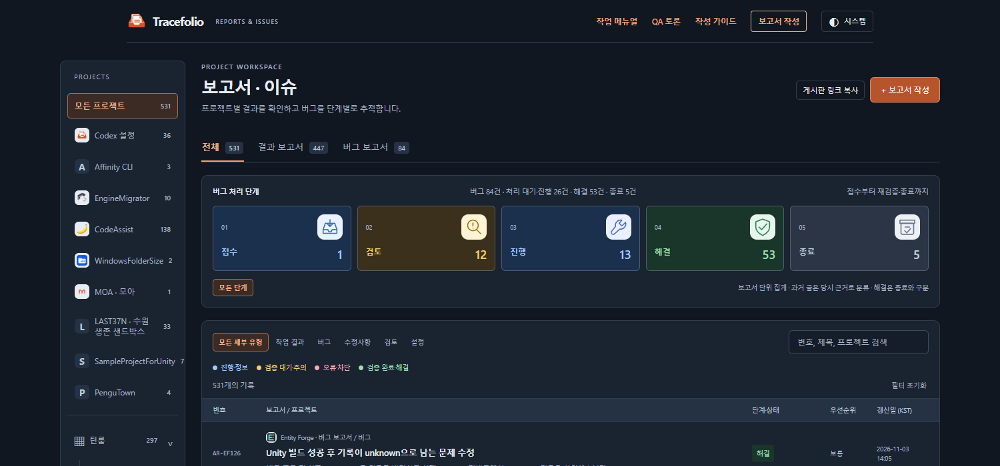
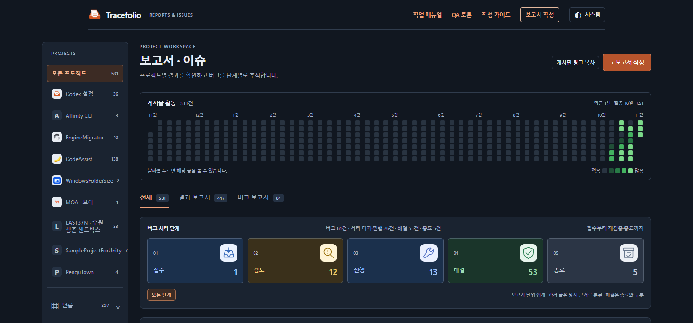

Codex 설정수정사항
Codex 설정수정사항보고서 상단에 프로젝트별 활동 잔디 추가
완료최근 1년 게시물 활동을 잔디로 보여주고, 날짜를 누르면 해당 글만 표시합니다.
작업 결과
요청하신 제목 아래·분류 탭 위에 GitHub식 초록 잔디를 추가했습니다. 사이트에서 보기
변경 내용
적용 내용
- 결과·버그 게시물 날짜를 KST 기준으로 집계합니다. GitHub 커밋 수와 작업 시간은 집계하지 않습니다. 기존 목록처럼 같은 이슈의 최신 버전만 셉니다.
- 프로젝트·분류·검색 조건에 따라 잔디가 바뀝니다. 날짜 클릭으로 글을 좁히고, 다시 클릭하거나 날짜 해제로 돌아옵니다.
- 다크·라이트 테마를 지원하며 모바일에서는 달력만 가로로 스크롤합니다.
변경 전 — 제목 아래에 활동 기록이 없었습니다.

변경 후 — 같은 위치에서 날짜별 활동량과 선택 날짜의 게시물을 확인할 수 있습니다.

검증
자동 테스트 48개, 브라우저 검사 14개, 공개 사이트 검사 6개를 통과했습니다. KST 자정·윤년·빈 활동·프로젝트/유형 합계·날짜 선택/해제·URL 복원·키보드·모바일 폭을 확인했습니다. 공개 검증 기록
남은 사항
전후 화면은 같은 1500×700 크기의 직접 캡처이며 72,811 / 65,027바이트입니다. 별도 이미지 편집 없이 사용했습니다. 비교 GIF·하이라이트는 이번에 제작하지 않았습니다. Affinity 연결과 내보내기 문서는 조회했지만 애니메이션 출력은 검증하지 않았습니다.
교훈 검토: 변경 없음 — 기존 실제 화면·집계 근거·간결한 보고 기준을 적용했습니다.
작업 시간
- 제안 시간: 10~15분
- 실제로 완료된 시간: 시작 2026-11-03 14:11:31 KST · 기능 공개 검증 2026-11-03T05:19:58.118Z · 결과 기록 최종 배포 확인은 채팅에 표기
- XERJ: 미사용 — 연결과 검색 스크립트가 제공되지 않아 rg로 현재 소스를 확인했습니다.